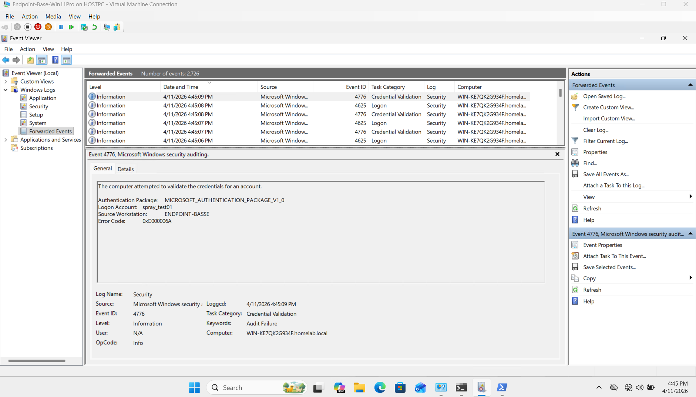
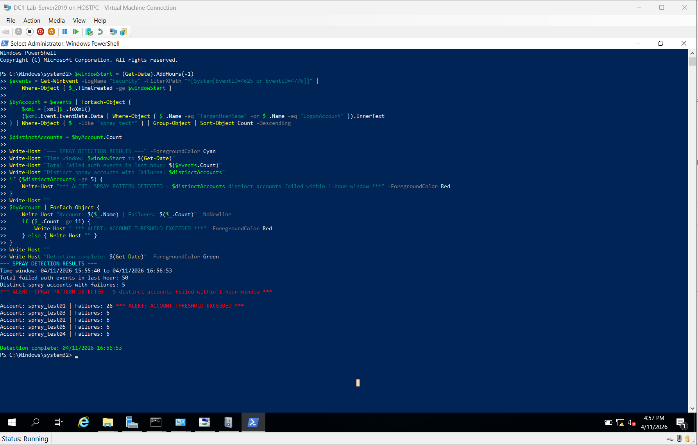
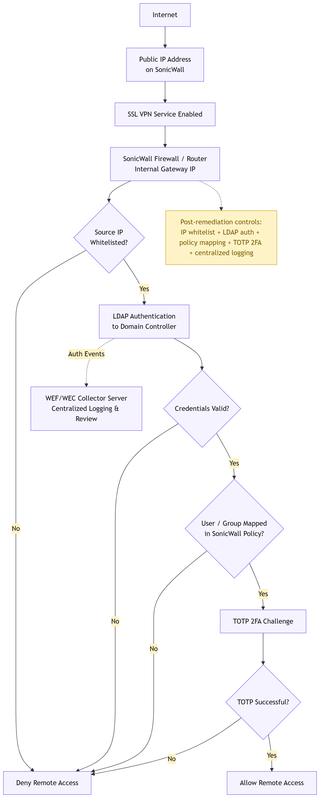

I didn't sharpen the runbook. I wrote it.
Healthcare cybersecurity and GRC.
Sole security practitioner across an 11-site federally qualified health center. Independent compliance peer-consultant to a 10-FQHC healthcare consortium. WGU MS Cybersecurity, April 2026. Seeking roles in security operations, GRC, or compliance where security is the primary responsibility.
I built this page specifically for Pax8 Global — I'm excited about this role! I put this portfolio together just for you. My master's capstone was based on a real incident at the organization where I'm the sole security and GRC practitioner. Every artifact is either a direct analog of the real thing or a recreation of work I actually performed in the environment. From detection to validation, this was my incident.
Resume Capstone Main Writeup Capstone Appendixes
Case Study — Beyond the MDR Threshold
Problem Statement
A small HIPAA-covered healthcare organization sustained a password spray and brute-force attack against its externally exposed SSL VPN authentication portal for at least six months. The organization's managed detection and response provider, under an active 24/7 monitoring contract, generated no automated alert at any point during the attack window. Detection occurred only through manual investigation by internal IT staff.
At the time of discovery:
- The SSL VPN portal authenticated login attempts against Active Directory via cleartext LDAP on port 389, meaning every external authentication attempt caused the SonicWall gateway to issue LDAP bind requests directly to the domain controller — credentials traversing the internal network in plaintext
- No centralized log collection infrastructure existed; security event logs resided only on the systems that generated them with no aggregation, review process, or retention policy
- No multi-factor authentication was enforced on the VPN portal, meaning a single correct password guess would have granted silent, undetected network access indistinguishable from a legitimate login
- Nine SonicWall management interfaces were publicly accessible from the WAN — the MDR provider's initial assessment had reported four; independent external validation confirmed nine
Risk and Regulatory Impact
Direct credential exposure confirmed. Wireshark packet capture during the investigation confirmed that authentication credentials — including exact passwords — were visible in plaintext in LDAP bind requests on port 389. Two accounts authenticated successfully during the attack window: an LDAP service account used by the SonicWall appliance and a VPN user account. Post-incident forensic review found no evidence of lateral movement or unauthorized data access from either account, but the window of undetected access was approximately six months.
HIPAA compliance gaps. The absence of centralized log collection and routine review represented a direct violation of HIPAA Security Rule §164.312(b), which requires audit controls capable of recording and examining activity in systems containing electronic protected health information. The cleartext LDAP credential transmission was inconsistent with §164.312(e)(1) transmission security requirements. Neither gap was incidental — both were direct contributors to the six-month attack duration.
Structural detection failure. Authentication failure volume during the active attack phase spiked approximately 140 to 160 times above the organization's documented baseline. That spike was invisible to the MDR provider because the provider's detection thresholds were calibrated across an enterprise-scale customer base, not the organization's specific authentication baseline. The structural gap between enterprise-scale detection thresholds and small-organization baseline activity is a predictable consequence of the co-managed security model as commonly deployed.
Constraints
- Single IT administrator. The initial incident response was entirely dependent on the institutional knowledge of one IT staff member who happened to run Wireshark at the right moment. No documented process, no escalation path, no coverage model existed.
- Active MDR contract created false confidence. The organization's implicit assumption that the MDR contract constituted sufficient detection coverage was structurally incorrect and was not discovered until the attack had already run for months.
- No centralized log infrastructure. The attack could only be partially reconstructed from a single 4.15-hour Wireshark capture window. No pre-incident baseline data existed.
- VPN access required during remediation. Approximately ten staff members depended on VPN for daily operations. Remediation had to be sequenced to minimize access disruption while closing the attack surface.
Discovery and Investigation
Detection occurred when the IT systems administrator manually captured traffic on the domain controller using Wireshark. The capture documented the following:
| Metric | Value |
|---|---|
| Capture window | 4.15 hours (February 27, 2026) |
| Authentication attempts observed | 342 |
| Distinct user accounts targeted | 16 |
| Unique passwords attempted | 271 |
| Approximate attempt rate | 1 attempt every 44 seconds, sustained |
| Event ID 4625 volume vs. baseline | ~140–160× above baseline |
| Accounts with successful authentication (Event 4624) | 2 — LDAP service account + VPN user |
| Evidence of lateral movement | None found |
| Evidence of unauthorized data access | None found |
The investigation confirmed that the authentication traffic was transmitted in cleartext between the SonicWall appliance and the domain controller, with exact passwords readable in the live packet capture. This finding directly established the LDAPS migration requirement and simultaneously validated the investigation methodology: the same tool used to discover the problem was used to validate its correction, providing a directly comparable before-and-after evidence set.
The MDR provider was contacted and provided a log export under a formal support ticket confirming successful authentication events for both accounts during the attack window. A subsequent SLA review confirmed that the per-customer threshold tuning necessary to detect this attack pattern is a platform-level constraint — not configurable per customer at the time of review. This framing was essential for the remediation design: when a vendor-side gap cannot be resolved unilaterally, the appropriate response is an internal compensating control calibrated to the organization's specific baseline.
Remediation
Remediation proceeded through four phases following a phased delivery methodology with defined KPIs and acceptance criteria for each phase.
Phase 1 — Immediate containment (February 27, 2026)
- LDAP disabled on the primary attack-surface device per MDR provider recommendation
- Passwords reset for both accounts confirmed to have authenticated during the attack window; active sessions revoked; both accounts flagged for elevated monitoring
Phase 2 — VPN hardening (April 2026)
Five security gates were deployed and validated in sequence:
- IP allowlisting — SSLVPN IP Allowlist address group restricting VPN access initiation to pre-registered staff WAN addresses, enforced as the source restriction on the Default Access Rule for inbound SSL VPN traffic
- Per-user TOTP enrollment — Time-based One-Time Password configured via NetExtender QR code for all ten VPN users in the RCHS-VPN-Users Active Directory security group
- Active Directory group enforcement — RCHS-VPN-Users group serving as the authoritative permitted-user list within the SonicWall user/group policy mapping
- TOTP MFA enforcement — Enforced at the SSLVPN Services group level; all whitelisted-IP attempts without a valid TOTP code are rejected before authentication reaches Active Directory
- LDAPS migration — SonicWall authentication profile reconfigured from cleartext LDAP port 389 to TLS-encrypted port 636; validated by Wireshark captures showing zero packets on port 389 and active TLS 1.2/1.3 handshake on port 636
All nine externally accessible SonicWall management portals were confirmed closed during this phase via external browser tests from a cellular connection against each interface IP, all returning ERR_CONNECTION_TIMED_OUT — confirming the firewall rule is silently dropping traffic rather than actively refusing it.
Phase 3 — Detection infrastructure and policy (April 2026)
- WEF/WEC centralized logging deployed: RCHS-SecurityEvents subscription forwarding authentication events (4624, 4625, 4740, 4648, 4776) and PHI file-access events (4656, 4660, 4663, 5145) from the domain controller to a dedicated WEC collector VM
- Dual-threshold PowerShell spray detection script deployed: fires on (a) 11 or more consecutive failures on a single account within any window, or (b) 5 or more distinct accounts with failures within a one-hour window
- RCHS-IS-004 Log Review and Incident Detection Policy authored: tiered weekly/monthly/quarterly/annual review cadence, eight anomaly thresholds with defined Level 1 and Level 2 escalation paths, six-year log retention schedule aligned to 45 C.F.R. §164.316(b)(2)
- All-staff security awareness training delivered to approximately 80 staff members; VPN MFA supplemental training delivered to all 10 VPN users with access restoration conditional on confirmed enrollment
Phase 4 — Controlled validation (April 11, 2026)
A controlled spray simulation was executed under written management authorization using five non-production test accounts created specifically for the test and disabled immediately after. The simulation used the ValidateCredentials() method against the domain controller's authentication stack, confirmed to generate Event IDs 4625 and 4776 on the domain controller. Both detection thresholds fired against real authentication event data: the spray pattern threshold (5 distinct accounts) and the account threshold (spray_test01 exceeded 11 failures). All test accounts were confirmed disabled at simulation completion.
Validation
| KPI | Acceptance Criterion | Result |
|---|---|---|
| MFA enforcement | 100% of whitelisted-IP VPN attempts without valid TOTP rejected | PASS |
| Management interface closure | 0 of 9 interfaces accessible from WAN | PASS |
| WEF/WEC event forwarding latency | Required Event IDs forwarded to WEC within 5-minute window | PASS — 4663 event received at 16 seconds |
| LDAPS migration | Zero cleartext LDAP bind requests on port 389 during 30-minute window | PASS — 0 packets on port 389; TLS confirmed on port 636 |
| Spray detection — account threshold | Alert after 11th consecutive failure on a single account | PASS |
| Spray detection — spray pattern threshold | Alert after 5th distinct account failure within 1-hour window | PASS |
| HIPAA audit control compliance | Log review policy signed and in effect | IN PROGRESS — policy authored; pending executive signatures (no technical dependency) |
Wireshark post-migration validation: zero packets captured on port 389 using the host [DC IP] and tcp port 389 capture filter; 80 packets captured on port 636 with TLS 1.2/1.3 handshake confirmed. The TLS capture included a Fatal: Unknown CA alert — expected behavior for a self-signed domain controller certificate not fully trusted by the SonicWall appliance, confirming TLS negotiation is occurring rather than indicating a failure.
Evidence
The following screenshots were captured during the controlled spray simulation and post-remediation validation (April 11, 2026).




Tooling
The spray detection script in Phase 4 is one instance of a broader pattern I use across GRC and compliance work: ingest structured data, evaluate against a defined policy rule, output a PASS/FAIL result with supporting detail. Two other tools built on the same pattern:
PowerShell CIS Benchmark control-testing framework. Scripts that programmatically verify Windows Server security baseline settings against CIS Controls v8 control objectives, producing per-control pass/fail results with the current state, expected state, and control ID. Designed for repeatable compliance verification without relying on commercial benchmark tooling.
Multi-viewport accessibility and compliance scanner. A Playwright and axe-core pipeline that runs WCAG 2.1 AA audits across desktop, tablet, and mobile viewports against client web properties. Raw axe findings — typically high-volume and repetitive across viewports — are fed to an LLM-orchestrated triage layer that classifies findings by severity, deduplicates across viewports, and generates remediation summaries aligned to WCAG criterion references. Built for and used in production across a ten-FQHC consortium accessibility engagement. The same orchestration pattern — ingest findings, apply policy-based classification, generate corrective action items — transfers directly to security event triage, runbook improvement, and corrective action tracking.
Why This Matters
This engagement demonstrates incident response and security hardening in a constrained real-world environment — not a lab, not a simulation. The attack was live, the credential exposure was confirmed, and the remediation had to balance security controls against operational continuity for a clinical workforce.
The key transferable outcomes are:
- Validated before-and-after methodology. Using the same tool to discover the problem and validate the fix — Wireshark, in this case — produces a directly comparable evidence set that is defensible in a compliance or regulatory context. The post-migration capture showing zero packets on port 389 is not an assertion; it is a measurement.
- Compensating control design under vendor constraints. When a platform-level MDR limitation cannot be resolved unilaterally, the appropriate architectural response is an internal detection layer calibrated to the specific environment's baseline — not an assumption that the vendor will adapt. RCHS-IS-004 and the dual-threshold detection script are that layer.
- Documentation as a governance artifact. The VPN Secure Setup Runbook and RCHS-IS-004 transform a set of technical configurations into a sustained compliance program with defined ownership, review cadence, and escalation paths. The policy is the control; the infrastructure implements it.
- Framework transferability. This project was scoped under HIPAA and implemented against NIST SP 800-53 and NIST CSF 2.0. Those frameworks are the methodological upstream of SOC 2 Trust Services Criteria, ISO 27001 Annex A, and PCI DSS control objectives. The compliance methodology is the same; the regulated party changes.
Framework alignment: HIPAA Security Rule §164.308(a)(5), §164.312(a)(1), §164.312(b), §164.312(d), §164.312(e)(1), §164.316(b)(1)/(b)(2) · NIST SP 800-53 Rev. 5: AU-2, AU-3, AU-6, AU-9, AU-11, SI-4, IA-2, SC-8 · NIST CSF 2.0: Protect (PR.AC, PR.DS), Detect (DE.CM, DE.AE), Respond (RS.AN) · CIS Controls v8: Control 6 (Access Control), Control 8 (Audit Log Management) · NIST SP 800-61 Rev. 3 (Incident Handling)
Framework context for MSP / multi-tenant environments
The NIST 800-53 control families exercised in this engagement — AU (Audit and Accountability), SI (System and Information Integrity), IA (Identification and Authentication), SC (System and Communications Protection) — map directly to the Trust Services Criteria in SOC 2, the Annex A controls in ISO 27001, and the control objectives in PCI DSS. The analytical methodology for identifying gaps, designing compensating controls, and documenting remediation outcomes is the same regardless of which framework the downstream report targets.